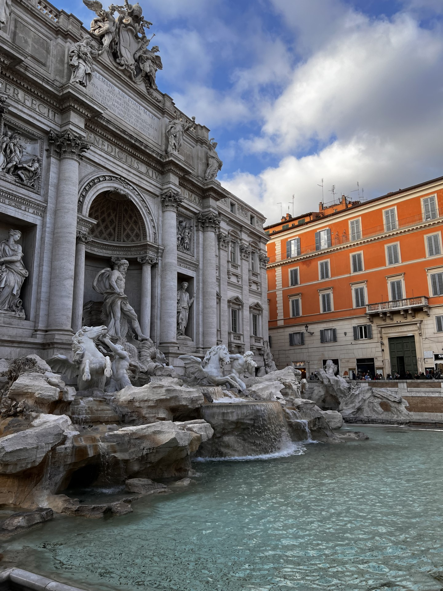
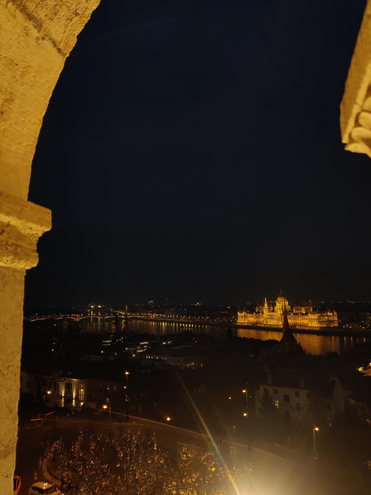
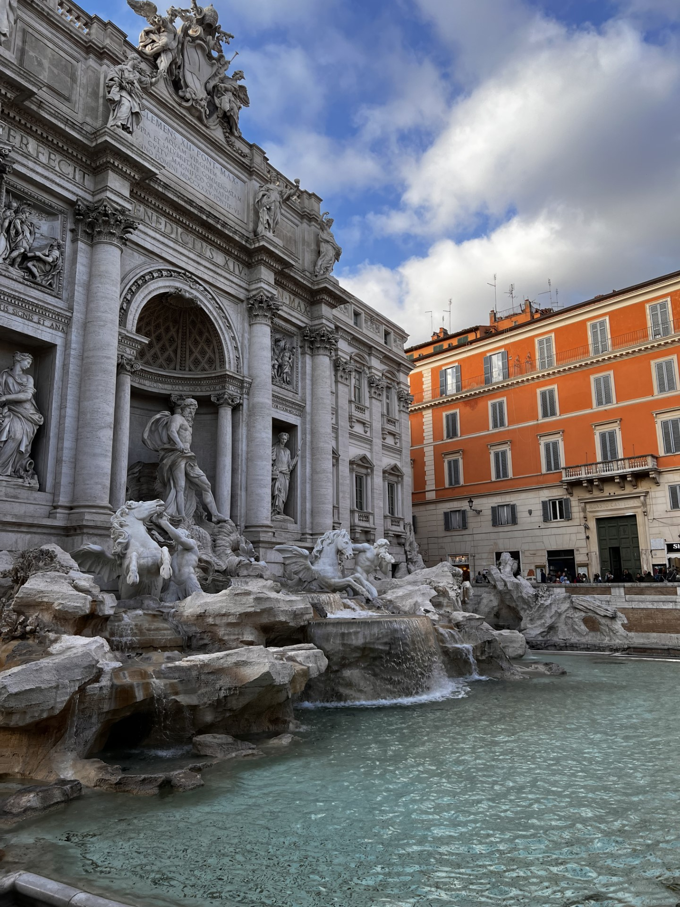
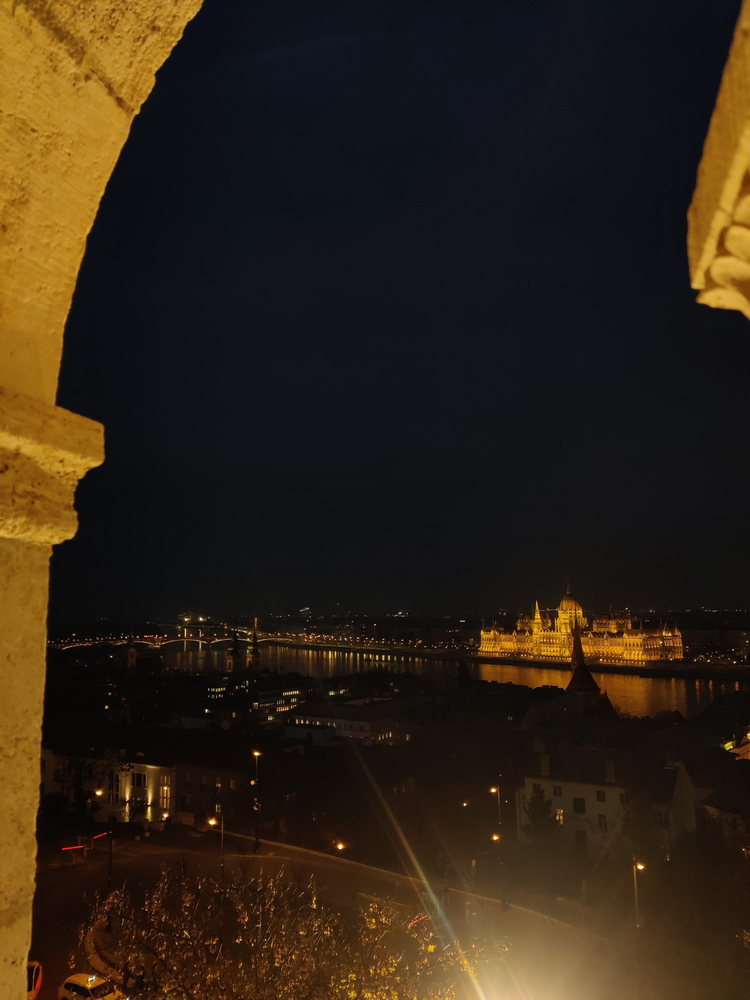
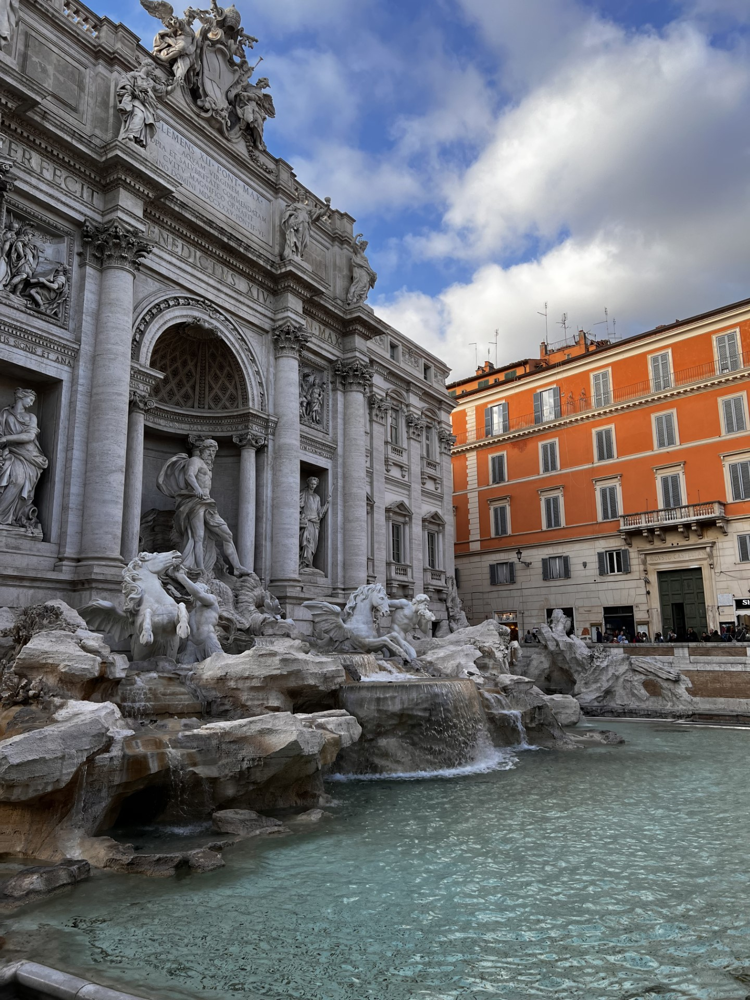
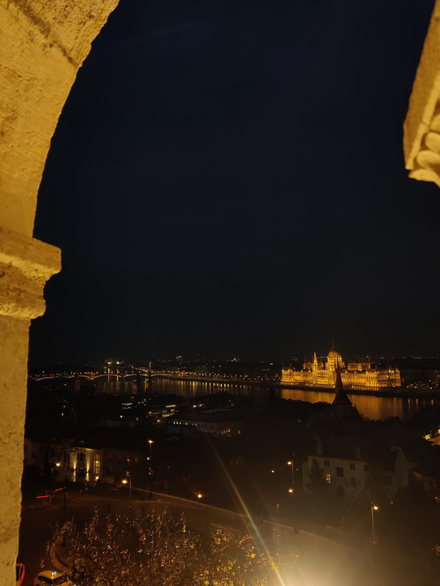

Osaan suomea ja venäjää ja koen olevani kaksikielinen, vaikka venäjä onkin virallisesti minun äidinkieleni ja opin sen ennen suomea. Lisäksi englanti on hyvä. Muut kielet ovat heikosti hallussa, koska niitä on tullut käytettyä todella harvoin lukion jälkeen.
Piirtämisen ja maalaamisen aloitin hyvin pienenä. Tykännyt erityisesti maalailemaan luontoon liittyviä teoksia. Kävin ollessani kuudennella luokalla vuoden kestävän piirustus- ja taidekoulun. Osa minun maalaamistani teoksista pääsi kahdelle näyttelylle Pukinmäen kirjastoon sekä Virka Galleria Kulmaan 12.9-7.10.2012. Ostettuani iPad:n olen alkanut enemmän piirtämistä diginä, josta olen tykännyt kovasti. Digitaalisen taiteen tekeminen ei kuitenkaan ole korvannut perinteistä paperia ja taulua. Tykkään kaikista tavoista ja kaikissa on omat puoleensa.
Lukemisesta innostuin myös lapsena ja tykkäsin lukea, kun löytyi kiinnostava kirja. Lukemisesta on ollut taukoa, kunnes vuonna 2023 innostuin siitä uudestaan ja olenkin saanut jo useamman kirjan luettua töiden ja koulun ohella. Pienempänä luin enemmänkin fantasiaa, mutta näin vanhempana luen enemmänkin tositapahtumiin perustuvaa kirjallisuutta.
Näistä innostuin pienenä päästyäni kotitalous tunneille. Tykkäsin useamman kerran kuussa kokata ja etenkin leipoa makeisia sekä sämpylöitä aamupalaksi. Nykyään ruoanlaitto on enemmänkin pakollinen asia, kuin harrastus, mutta usein jos vain aika sen sallii niin tykkään testailla uusia reseptejä ja välillä leipoa perheelle ja ystäville esimerkiksi perunarieskoja tai piirakoita.
Judon aloitin pienenä ja virallisesti, mutta ehdin olemaan mukana vain muutaman viikon, kunnes elämään tuli tilanne, jonka takia tämä harrastus jouduttiin lopettaa näinkin äkkiä. Ju-jutsun aloitin ollessani seitsemännellä luokalla ja sitä harrastin kolme vuotta ja pääsin oranssille vyölle. Tykkäsin siitä kovasti pienenä, se toi tasapainoa taiteellisen nuoren arkeen, kun pääsi myös liikkumaan, eikä vaan luomaan.
Pianoa harrastin muutaman vuoden ala-asteella. Siitä on kuitenkin sen verran aikaa, etten muista siitä hirveästi. Viulua taas soitin kaksi ja puoli vuotta ollessani yläasteella. Viulusta opin, että on hyvin erikoinen ja todella tarkka instrumentti. Pienikin väärä veto tai painallus väärästä kohdasta sai nuotin kuulostamaan väärältä.
Salilla käymisen aloitin 2019. Siellä kävin kuitenkin nimenomaan harrastus mielessä, että sinne menin, jos aikataulu sen salli. Välillä pääsi käymään ahkerasti välillä taas ei onnistunut käydä ollenkaan. Siellä tulikin käytyä eniten silloin, kun oli vain töissä, eikä ollutkaan muuta tekemistä. Silloin, kun keskittyminen meni muualle, niin salilla käyntikin väheni.
Olen hieman epävarma voiko matkustamista sanoa harrastukseksi. Kuitenkin ollessani töissä koronan aikana rahaa jäi todella hyvin säästöön. Sain töiden puolesta ensimmäisten joukossa koronarokotteet ja silloin, minulle avautui ovet matkustelulle EU:n sisällä. Silloin vielä lennot ja matkustaminen yleisesti oli todella halpaa ja otin tilanteesta kaiken irti ja päätin suunnata ensimmäiselle ulkomaanmatkalle yksin. Suunnittelin työvuoroni, niin että onnistuin aikatauluttamaan matkan väliin. Tykkäsin ensimmäisestä matkasta niin paljon, että varasin hyvin pikasesti matkan seuraavaan maahan muutaman kuukauden päähän. Kolmivuorotyön hyvät puolet ovat, että mikäli vuorotoiveet onnistuvat, on mahdollista saada yli viikko vapaa pelkillä normivapaapäivillä käyttämättä ollenkaan vuosilomapäiviä tai palkatonta vapaata. Hyvin äkkiä elämä meni siihen pisteeseen, että suunnittelin matkaa, matkan jälkeen. Tykkäsin käydä matkoilla sekä itsekseni, että muiden kanssa. Molemmissa oli omat puoleensa ja oppi nopeasti olemaan stressaamatta ja olemaan ulkomailla rennosti ja tuli todella paljon erilaisia kokemuksia. Pääsi nauttimaan erilaisista lomista ja sopeutumaan erityylisiin matkoihin. Budjetitkin vaihtelivat, oli semmoisia missä menin vähemmällä ja oli semmoisia, missä menin suhteen rennosti rahankäytön puolesta. Onnistuin muutamassa vuodessa käydä yksin seitsemässä maassa, ja sen ohella oli matkoja ystävien kanssa ja laivaristeilyt siihen päälle. Maailma rupesi tuntumaan koko ajan pienemmältä ja Suomea oppi arvostamaan täysin uudella tavalla.

